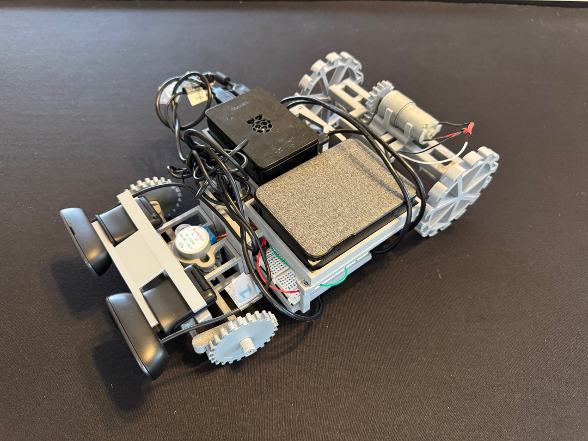

About Me
Hello! My name is Eric Judys. I am a 2nd year undergraduate studying Computer Science at Cornell University with minors in Artificial Intelligence, Robotics, Game Design, and Business in Engineering , expected graduation in December 2026.
I have a personal passion for writing software for innovative robotics and Game Design, which provide uniquely challenging environments and and an endlessly fascinating range of possibilities. Below, I detail some projects and classwork that highlight my developments in these areas.
Outside of academics, I draw my inspiration from both interactive problem-solving and the natural world. Be it optimizing Factorio Space Industries or studying evolutionary engineering solutions such as the emergent complexity of the ant pile or the peak aerodynamics of the king fisher, I seek to apply these princples in all facets of my work to create the next big step forward.
Languages & Libraries
Coding Methodologies
Relevant Coursework
Project Highlight
Meet the robot in the picture above, built and designed this summer from scratch powered by no more than two humble webcams, a Raspberry Pi 4, and an Arduino Mega to see just how far I could push low-cost hardware in creating a machine that can autonomously explore and map its surroundings using only visual input, running a modified simultaneous localization and planning (SLAM) system with the option to connect up to a hub PC to store and track surroundings. Handy for dangerous operations or surveillance because of the speed it provides and its ability to perform without contact to a hub or controller when the connection gets spotty.
Continue Reading
The Pi is the star player, running a mini SLAM system. Using it, I take in the footage of two webcams, each at 640x480 10 fps, and every couple of frames, process them into a disparity map using a weighted least squares (WLS) filter to reduce noise. By converting the disparity map into a depth map, I can extract a point cloud of relevant vertices. Additionally, through iterative closest point (ICP) registration, I estimate the new pose of the robot camera as it moves in space. Projecting the original point cloud to world space using the estimated pose, I can then populate a voxel grid with all newly defined points. By applying a combination of A* and Dubins path to this grid, the robot can now travel to a defined pose for the camera as it continues its journey to define all accessible voxels. Note that more complex features of traditional SLAM systems, such as loop closure, are omitted from this SLAM as the occupancy grid/point cloud substitutes in for a defined path, and the purpose of this bot is just to explore a region; true mapping would be done with a host PC as needed.
While the Pi ran the heavy computations, the Pi also ran communications to the Arduino and PC. Using an input of desired motor movements for the defined path, the Pi issues orders to the Arduino, chosen for its single-schedule architecture, to get the robot moving. The Pi also broadcasts its video feed to a host PC, if one was connected, and upon request, would get additional supplementary pose updates for the camera from ORB-SLAM3 running on the computer to bolster its positional understanding.

In my pursuit to squeeze the most out of two webcams, I had to cut a lot of computational corners on the Pi. The point cloud generated from the depth map jumped wildly between frames due to the lower resolution, and I had to rely heavily on estimations as well as a temporal gate that limited what points were accepted from time to time, and reduced the reliability of ICP for the camera pose. The number of frames and the speed of the bot had to be tuned to be performant without leaving potential points unidentified. Also, I originally had the Pi publicly broadcasting via an OpenCV TCP video writer, but I had to rewrite that in favor of sockets in order to transfer metadata along with the frames as I built in the supplementary pose estimation from the PC.
All in all, this was a very rewarding and exhilarating experience. I felt that such complicated bots were out of reach, but in one dedicated summer, I accomplished what I set out to do. To continue development of it, I will add a system to identify an object and relate it to the same generic object the bot encountered earlier, a cache of notable features and placements, employing hidden Markov models to improve noisy data estimation, or adapting the robot’s wheels to legs for easier terrain traversal.
I greatly enjoyed working on this bot and am looking forward to the next big adventure!
Code Highlight
Advent of Code is a series of increasingly difficult challenges released each year as a holiday advent calendar. 25 days, 2 parts per day. Below is my Python implementation for Part 2 of Day 23, chosen for its conciseness and elegance.
Given a directory of computer connections as puzzle input in the form of , where there exists a bidirectional connection between computers and , Part 1 was to find how many interconnected LANs contain at least one computer whose name starts with . Part 2 took this a step further to find the largest Local Area Network among all networks.
Using set theory to compare and obtain the intersection of computer networks, I can capitalize on fast computations to rapidly compare the large input of over 3000 connections. My implementation also incorporates an in-depth understanding of the prompt and comparisons such as a network containing computers , , and links to , is fundamentally the same as a network containing computers , , and linked to , , or any permutation of the four computers.
These algorithmic improvements and major optimizations, along with a multitude of smaller improvements, allow my solution to compute the largest LAN of 3000 disjoint computer connections in only 0.15 seconds.
Show Python LAN Connections Solution
from collections import defaultdict """import input as text after removing new line and seperating the computers note that inputs comes in this form: vz-aj qm-zr cc-av """ with open("input.txt", "r+") as doc: input_txt = [i[:-1].split("-") for i in doc.readlines()] connections = defaultdict(set) for each in input_txt: c1, c2 = each # duplicate calls to add forward and backward connection of computers connections[ (c1,) ].add(c2) connections[ (c2,) ].add(c1) def combine_connections(new_set, base): """ Expands LAN groups by merging sets of computers that share common connections. - Each group represents a set of interconnected computers. - A new group is formed if two groups share at least one common connection. - Only fully interconnected groups are considered (each computer in the group must be directly connected to every other computer in the group). - Sorting is used to ensure that identical groups (regardless of order) are treated equally. Args: existing_connections (dict): LAN groups being expanded. base_connections (dict): Initial connections between individual computers. Returns: dict: New LAN groups formed in this iteration, mapped to their shared connections. """ new_connections = defaultdict(list) added_connections = set() for c1,c1_connections in new_set.items(): for c2,c2_connections in base.items(): intersection = c1_connections & c2_connections # conditional designed to check easier operations first to quit out early, # expensive operations like issubset() are not precalculated but calculated if needed if (intersection and c1 not in new_connections and c2 not in c1 and set(c1).issubset(c2_connections) and set(c2).issubset(c1_connections)): new_key = [] for i in c1: new_key.append(i) new_key += c2 # key_interseciton used as a combination of the key value (singular LAN network) # and intersection between the two passed in LAN networks. It is calculated and # stored as sorted as a form of memoization as order doesn't matter. # ex: LAN aa bb with intersection at cc dd is the same as # LAN aa cc with intersection at bb dd key_intersesction = tuple(sorted(new_key+list(intersection))) new_key = tuple(sorted(new_key)) if key_intersesction not in added_connections: new_connections[new_key] = intersection added_connections.add(key_intersesction) return new_connections def main(connections): """ Identifies the largest fully interconnected LAN network. - Starts with direct connections and iteratively expands groups by adding computers. - If a group has only one remaining possible connection, it is finalized. - The largest network found is the LAN party, and its names (sorted) form the password. Args: connections (dict): Initial network connections between individual computers. """ new_connections = combine_connections(connections, connections) # n is the size of established LANs, starts at 2 as the above calcualtes to 2 when initilzied n = 2 while new_connections: print("current size", n, "; len of total connections", len(new_connections)) final_set = set() new_connections = combine_connections(new_connections, connections) updated_connections = {} for key,value in new_connections.items(): if len(value) == 1: final_set.add(tuple(sorted(list(key) + [value.pop()]))) else: updated_connections[key] = value new_connections = updated_connections n += 1 print(final_set) for each in final_set: temp = sorted(each) for cmputer in temp: print(cmputer, end=",") main(connections)
Past and Active Projects
Click the cards to expand and read more!